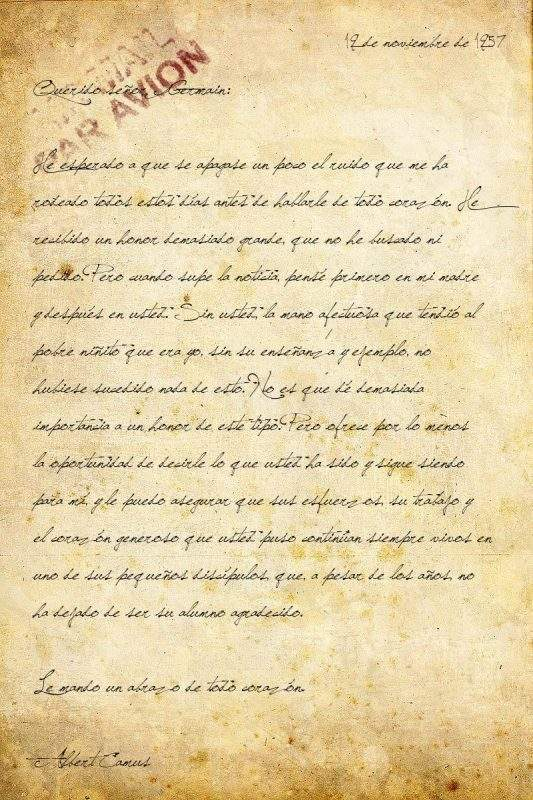

4. Un juglar debe tener un buen manuscrito.

Tras escribir el borrador de tu cantar, ahora toca convertirlo en un auténtico manuscrito medieval. Ya sabes que sin manuscrito, un juglar no tiene nada que hacer...
Y te preguntarás: ¿cómo voy a hacer esto? Pues muy fácil:
-Puedes usar CANVA como herramienta digital para fabricar tu manuscrito: busca una plantilla que encaje con la apariencia que tenían los manuscritos antiguos e inserta tu texto. ¡Y ya lo tienes!
-Si lo prefieres, puedes usar ESTA WEB que genera manuscritos de forma automatizada. Tan solo tendrás que elegir el formato que más te guste, introducir tu texto y ya está.
¡A por ello!